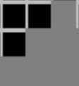
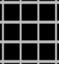
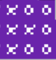
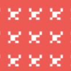
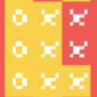

States of the Automata
In creating cellular automata for our simulation, I had to define a set of states and the transition function.
The simulation must also be able to distinguish between different factions.
These are the states I proposed for cells, as derived from the example of the Eastern Front:
| State name | State properties | Representation in simulation |
|---|---|---|
| Terrain | This state is fixed under every circumstance, representing the geometry of the war which will not change throughout the course of the simulation. | 
|
| Unoccupied | This state represents any territory that hasn't been occupied, or has been cut-off. This state is the default for cells. | 
|
| Capital | This is the initial state for any cell designated to generate and expand an invading force. | 
|
| Supply | Supply: This state is set for cells which are bridges between capital cells and frontline cells. Supply cells would be generated from frontline cells that are already behind the frontline, simulating a “reinforcement” of the frontline. | 
|
| Frontline | This is the state that will be assigned for outermost cells of the “advancing force.” | 
|
Transition Function
From here, I will define some simple transition function to give the growing cluster of cells the semblance of an army expanding its territory:
| Cell target | Function |
|---|---|
| Capital | If one or more neighbors is a frontline cell, and those neighbors are of the opposite faction, then the cell becomes unoccupied and factionless. |
| Unoccupied | if two or more neighbors is a capital cell, then the cell becomes a frontline cell. This also happens if one or more neighbors is a frontline cell. |
| Supply | if more than one neighbor is a frontline cell, and that neighboring cell is an enemy, then the cell becomes unoccupied and factionless. This also happens if there is one or less neighboring supply cell. |
| Frontline | if more than 3 neighbors are frontline cells, and there are no enemy cells, then the cell becomes a supply cell. If there is no neighboring supply cell, then the cell becomes unoccupied and factionless. |